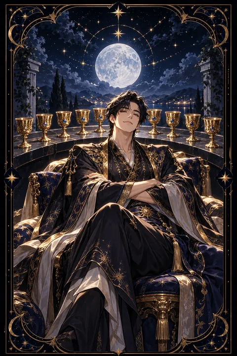

컵 9 카드 — 소원 성취와 만족
컵 9 카드 한눈에 보기
컵 9 카드 상징 읽기

동네보살의 카드 그림은 전통 라이더–웨이트 덱의 뜻을 새 그림으로 옮긴 것입니다. 아래 상징 설명은 전통 덱의 그림을 기준으로 합니다.
통통한 사내가 나무 의자에 앉아 팔짱을 끼고 만족스러운 표정을 짓고 있습니다. 넉넉한 몸집과 붉은 모자는 물질적으로나 감정적으로 채워진 상태, 그리고 뜻을 이룬 자신감을 나타냅니다.
그의 뒤로는 푸른 천을 덮은 반원형 탁자 위에 황금 잔 아홉 개가 나란히 놓여 있습니다. 잔이 무지개처럼 둥글게 늘어선 모습은 이룬 것들을 자랑스럽게 진열해 둔 장면으로 읽힙니다.
팔짱을 낀 자세는 두 가지로 해석됩니다. 하나는 더 바랄 것이 없다는 만족이고 다른 하나는 가진 것을 지키려는 닫힌 마음입니다. 이 양면성이 정방향과 역방향의 차이를 만듭니다.
배경의 밝은 노란색은 기쁨과 낙관을 뜻합니다. 사내 앞에 아무것도 놓여 있지 않은 것은 지금의 만족이 과거에 쌓아 온 결과임을 보여 줍니다.
컵 9 카드 정방향 뜻
정방향 컵 9는 타로에서 소원 카드로 불립니다. 마음속으로 바라던 일이 이루어지고 노력한 만큼 보상이 돌아오는 흐름을 뜻합니다. 물질적인 여유와 정서적인 만족이 함께 찾아오는 드문 시기입니다.
이 카드가 나오면 스스로를 칭찬하고 이룬 것을 충분히 누려도 좋습니다. 작은 사치나 휴식을 허락하는 것이 다음 단계로 나아갈 에너지가 됩니다. 사람들 앞에서 자신감 있게 행동하기에도 유리한 때입니다.
다만 만족이 자만으로 바뀌지 않도록 주의가 필요합니다. 팔짱을 낀 사내처럼 마음을 닫아 두면 새로운 기회와 사람이 다가오기 어렵습니다. 기쁨을 주변과 나누고 감사를 표현할수록 행운은 더 오래 머뭅니다. 이루고 싶은 소원이 있다면 지금 구체적으로 적어 두는 것도 좋습니다.
컵 9 카드 역방향 뜻
역방향 컵 9는 겉으로는 모든 것을 갖춘 듯 보이지만 속은 채워지지 않은 상태를 나타냅니다. 원하던 것을 얻었는데도 기대만큼 기쁘지 않거나 더 많은 것을 바라며 지금의 복을 놓치는 모습입니다.
과식이나 과소비처럼 바깥의 것으로 공허함을 메우려는 경향을 경계하라는 메시지도 담겨 있습니다. 소원이 늦어지거나 다른 모양으로 이루어져 실망할 수도 있습니다. 남에게 보이는 성공에 집착하면 만족은 점점 멀어집니다.
이 카드는 행복의 기준을 다시 세우라고 권합니다. 내가 진짜 원한 것이 물건이었는지 인정이었는지 마음의 평안이었는지 돌아보세요. 이미 가진 것에 감사하는 습관을 들이면 같은 잔으로도 훨씬 큰 만족을 느낄 수 있습니다. 나눔이 채움보다 먼저라는 점을 기억하세요.
연애에서 컵 9 카드
솔로라면 바라던 이상형에 가까운 사람과 마주칠 기회가 늘어나는 시기입니다. 자신감이 매력으로 드러나 모임이나 소개 자리에서 좋은 반응을 얻기 쉽습니다. 원하는 관계의 모습을 분명히 알고 있다면 망설이지 말고 다가가 보세요.
짝이 있는 분이라면 서로에게 만족하며 안정된 행복을 누리는 흐름입니다. 기념일을 챙기거나 함께 맛있는 식사를 즐기며 지금의 기쁨을 나누기 좋습니다. 다만 편안함에 기대어 상대를 당연하게 여기지 않도록 주의하세요. 오늘 받은 배려에 고맙다는 말을 전하는 작은 습관이 둘 사이의 온기를 지킵니다. 결혼이나 동거처럼 오래 바라던 계획이 있다면 구체적으로 이야기를 꺼내기에도 좋은 때입니다. 좋은 기운을 믿고 스스로를 가꾸는 데 시간을 들이면 그 여유가 자연스러운 매력으로 드러납니다.
재회·속마음 질문에서 컵 9 카드
재회 질문에서 컵 9가 나오면 바라던 재회가 이루어질 가능성이 있는 긍정적인 신호입니다. 상대도 과거의 좋은 기억을 떠올리며 만족스러운 감정을 품고 있을 수 있습니다. 다만 재회 자체를 목표로 삼기보다 다시 만나 무엇을 함께 누리고 싶은지 그려 보는 것이 중요합니다. 소원 카드답게 원하는 바가 분명할수록 흐름이 그쪽으로 모이니 막연한 그리움보다 구체적인 바람을 정리해 두세요. 뒤집힌 컵 9라면 다시 만나도 기대만큼 채워지지 않을 수 있으니 서두르지 않는 편이 좋습니다. 외로움을 달래려는 재회인지 그 사람이어야 하는 재회인지 조용히 자문해 보는 것이 먼저입니다.
일·금전에서 컵 9 카드
일과 직장에서는 목표를 달성하고 성과를 인정받는 시기입니다. 오래 준비한 프로젝트가 좋은 결과를 내거나 승진, 합격, 계약 성사 같은 반가운 소식이 올 수 있습니다. 성과를 자신 있게 알리고 보상을 요청해도 어색하지 않은 시기입니다.
돈의 흐름에서도 여유가 생깁니다. 수입이 늘거나 예상치 못한 보너스가 들어올 수 있습니다. 다만 기분 좋은 만큼 지출도 커지기 쉬우니 들어온 돈의 일부는 미리 저축으로 떼어 두세요. 스스로에게 주는 보상은 계획 안에서 누릴 때 더 달콤합니다. 성과를 정리한 기록을 남겨 두면 다음 협상이나 평가 자리에서 든든한 근거가 됩니다. 기쁜 소식이 왔을 때 함께 애쓴 사람들에게 감사를 전하는 것도 잊지 마세요.
컵 9 카드는 예일까 아니오일까
타로에서 소원 카드로 불릴 만큼 바라는 일이 이루어진다는 뜻이 강해 예로 봅니다. 역방향이라면 결과는 오더라도 기대와 모양이 다르거나 늦어질 수 있어 조건부로 읽습니다.
자주 묻는 질문
컵 9 카드 역방향은 나쁜 뜻인가요?
역방향 컵 9는 겉으로는 모든 것을 갖춘 듯 보이지만 속은 채워지지 않은 상태를 나타냅니다. 원하던 것을 얻었는데도 기대만큼 기쁘지 않거나 더 많은 것을 바라며 지금의 복을 놓치는 모습입니다.
컵 9 카드가 연애 질문에 나오면요?
솔로라면 바라던 이상형에 가까운 사람과 마주칠 기회가 늘어나는 시기입니다. 자신감이 매력으로 드러나 모임이나 소개 자리에서 좋은 반응을 얻기 쉽습니다. 원하는 관계의 모습을 분명히 알고 있다면 망설이지 말고 다가가 보세요.
타로 카드는 어떻게 뽑나요?
타로 카드 페이지에서 78장을 섞으면 그중 22장이 펼쳐집니다. 마음이 가는 세 장을 고르면 과거·현재·미래 자리에 놓이고, 한 장씩 뒤집어 자리와 방향에 맞는 풀이를 읽습니다. 정방향과 역방향은 섞는 순간 정해집니다.